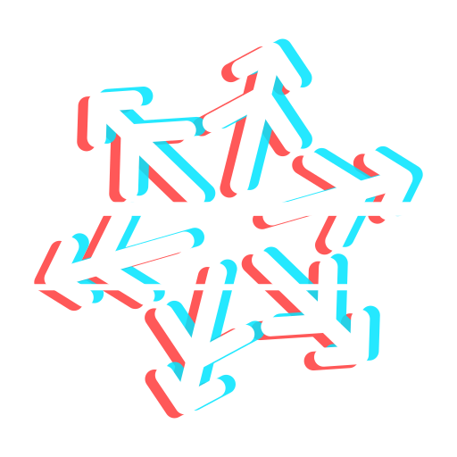

In the app
Open the Recipes tab, pick a recipe and click Install – the modules, key bindings and look it is made of come along. Then build its image and create a VM from it. Modules and looks have tabs of their own.

omaflakeRecipes declare what a VM is – a platform, the modules in it, a look and key bindings, what it needs and how it runs. omaflake builds an image from a recipe and starts disposable VMs from it. Installing a recipe brings the modules it is made of.
Nothing matches.
Open the Recipes tab, pick a recipe and click Install – the modules, key bindings and look it is made of come along. Then build its image and create a VM from it. Modules and looks have tabs of their own.
Each entry above shows its command under Details and install.
omaf recipes install omaflake/nixos/neovim-minimal
omaf recipes show neovim-minimal
omaf build neovim-minimal
omaf new test --recipe neovim-minimalPut a recipe together in the app (New Recipe …), write one (Writing
recipes), propose it by pull request, or run a catalog of your own – this page shows any public one:
?source=owner/repo.